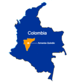

De: La Frikipedia, la enciclopedia extremadamente seria.
De: La Frikipedia, la enciclopedia extremadamente seria. De: La Frikipedia, la enciclopedia extremadamente seria.

|
FRIKIPEDIA QUIERE QUE ESTA DEFINICIÓN
PASE A SER UN ARTÍCULO FRIKIPÉDICO La información contenida en este artículo es una mínima parte de su jugo total, así que ponte los guantes, saca el tupperwere y empieza a exprimir el tema. Si lo haces serás recompensado con una galleta en almíbar y algo más. |
| De la serie Países del planeta tierra: | |||||
| Հայաստանի Հանրապետություն Hayastani Hanrapetut’yun Republica Antimpositiva Concertista de Armenia | |||||
|---|---|---|---|---|---|
| |||||
| Lema: En Todas Las Playas y en todos los paradores | |||||
| Himno: El Tema de verano del momento
| |||||
| 
| |||||
| Capital | Berch Rupenian | ||||
| Mayor ciudad | {{{mayor_ciudad}}} | ||||
| Lenguas oficiales | Armenio,Ruso, Chino, Catalan, Mafia,Español,aleman, Papiclano,espartano, C++, C-, Tartamudo y Tloglodita | ||||
| Gobierno | Antiimposivista Popular | ||||
| Evasor | Berch y Aran Rupenian | ||||
| Área | Por la Tablada | ||||
| Población | 4 millones, despues de los Turcos, unos pocos mas | ||||
| Moneda | Pesos Polacos | ||||
| Zona horaria | GTM +X | ||||
| Dominio Internet | .IAN | ||||
| Código telefónico | 94.2
| ||||
| Basura, Basura!! | |||||
Armenia fue creada por Diox en el 32 después de un confrontamiento cotidiano en su vida en el cual murieron 39.3 personas y 4 por accidente.
Este país fue, es y sera siempre un país en ataque constante de diferentes culturas contrastantes como la escoria humana mas grande Turquía (el país natal del Teto Medina)
el motivo de estos ataques es la gran envidia (por parte de los turcos principalmente) de la terminación de todos los apellidos armenios "IAN"
Este país no participa de ningún mundial de fútbol ya que no posee canchas para practicar el deporte gracias al ataque turco
Definición: Terminación de todos los apellidos armenios y de aquellos que desean serlo
La terminación del apellido armenio surge de una confrontación ya antes mencionada entre Diox y ciertos trabajadores de sindicatos.
Luego de matarlos a todos, decidió que la gente no tendría que olvidar este momento y por eso decidió insertar de alguna forma los nombres de los difuntos dentro del apellido de las futuras generaciones... pero de esta forma, los apellidos serian muy graciosos y extensos, a la par que más estúpidos que el autor de este "artículo".
Ejemplo: Juan Carnicerobancarioherreroverdulero
Después de un segundo de meditación (3 personas murieron), decidió agregarle las siglas "ian" al final de cada apellido.. junto con su prefijo. Quedando asi:
Ejemplo: Juan Carnicerobancarioherreroverdulerian
Existen diferentes tipos de prefijos armenios cada uno con su significado:
En la actualidad, se cree que las siglas "ian" significa "hijo de" pero los especialistas saben que en realidad significa "Idolatren A Norris"
| |
|---|
| Arabia Saudita • Armenia • Azerbaiyán • Bahrein • Bangladesh • Bután • Birmania • Brunéi • Camboya • Emiratos Árabes • Indonesia • Jordania • Kuwait • Kirguistán • Maldivas • Nepal • Omán • Qatar • Singapur • Sri Lanka • Tayikistán • Timor Oriental • Yemen |
Autor(es):